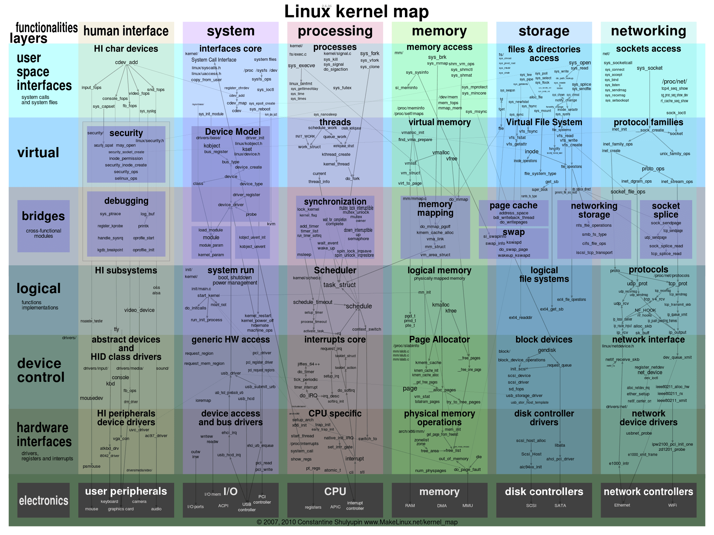

- 00 开篇词 为什么要学写一个操作系统？.md.html
- 00 编辑手记 升级认知，迭代自己的操作系统.md.html
- 01 程序的运行过程：从代码到机器运行.md.html
- 02 几行汇编几行C：实现一个最简单的内核.md.html
- 03 黑盒之中有什么：内核结构与设计.md.html
- 04 震撼的Linux全景图：业界成熟的内核架构长什么样？.md.html
- 05 CPU工作模式：执行程序的三种模式.md.html
- 06 虚幻与真实：程序中的地址如何转换？.md.html
- 07 Cache与内存：程序放在哪儿？.md.html
- 08 锁：并发操作中，解决数据同步的四种方法.md.html
- 09 瞧一瞧Linux：Linux的自旋锁和信号量如何实现？.md.html
- 10 设置工作模式与环境（上）：建立计算机.md.html
- 11 设置工作模式与环境（中）：建造二级引导器.md.html
- 12 设置工作模式与环境（下）：探查和收集信息.md.html
- 13 第一个C函数：如何实现板级初始化？.md.html
- 14 Linux初始化（上）：GRUB与vmlinuz的结构.md.html
- 15 Linux初始化（下）：从_start到第一个进程.md.html
- 16 划分土地（上）：如何划分与组织内存？.md.html
- 17 划分土地（中）：如何实现内存页面初始化？.md.html
- 18 划分土地（下）：如何实现内存页的分配与释放？.md.html
- 19 土地不能浪费：如何管理内存对象？.md.html
- 20 土地需求扩大与保障：如何表示虚拟内存？.md.html
- 21 土地需求扩大与保障：如何分配和释放虚拟内存？.md.html
- 22 瞧一瞧Linux：伙伴系统如何分配内存？.md.html
- 23 瞧一瞧Linux：SLAB如何分配内存？.md.html
- 24 活动的描述：到底什么是进程？.md.html
- 25 多个活动要安排（上）：多进程如何调度？.md.html
- 26 多个活动要安排（下）：如何实现进程的等待与唤醒机制？.md.html
- 27 瞧一瞧Linux：Linux如何实现进程与进程调度_.md.html
- 28 部门分类：如何表示设备类型与设备驱动？.md.html
- 29 部门建立：如何在内核中注册设备？.md.html
- 30 部门响应：设备如何处理内核I_O包？.md.html
- 31 瞧一瞧Linux：如何获取所有设备信息？.md.html
- 32 仓库结构：如何组织文件_.md.html
- 33 仓库划分：文件系统的格式化操作.md.html
- 34 仓库管理：如何实现文件的六大基本操作？.md.html
- 35 瞧一瞧Linux：虚拟文件系统如何管理文件？.md.html
- 36 从URL到网卡：如何全局观察网络数据流动？.md.html
- 37 从内核到应用：网络数据在内核中如何流转.md.html
- 38 从单排到团战：详解操作系统的宏观网络架构.md.html
- 39 瞧一瞧Linux：详解socket实现与网络编程接口.md.html
- 40 瞧一瞧Linux：详解socket的接口实现.md.html
- 41 服务接口：如何搭建沟通桥梁？.md.html
- 42 瞧一瞧Linux：如何实现系统API？.md.html
- 43 虚拟机内核：KVM是什么？.md.html
- 44 容器：如何理解容器的实现机制？.md.html
- 45 ARM新宠：苹果的M1芯片因何而快？.md.html
- 46 AArch64体系：ARM最新编程架构模型剖析.md.html
- LMOS来信：第二季课程带你“手撕”计算机基础.md.html
- 大咖助场 以无法为有法，以无限为有限.md.html
- 用户故事 yiyang：我的上机实验“爬坑指南”.md.html
- 用户故事 成为面向“知识库”的工程师.md.html
- 用户故事 技术人如何做选择，路才越走越宽？.md.html
- 用户故事 操作系统发烧友：看不懂？因为你没动手.md.html
- 用户故事 用好动态调试，助力课程学习.md.html
- 用户故事 艾同学：路虽远，行则将至.md.html
- 结束语 生活可以一地鸡毛，但操作系统却是心中的光.md.html
- 捐赠
04 震撼的Linux全景图：业界成熟的内核架构长什么样？
你好，我是LMOS。
什么？你想成为计算机黑客？
梦想坐在计算机前敲敲键盘，银行账号里的数字就会自己往上涨。拜托，估计明天你就该被警察逮捕了。真正的黑客是对计算机技术有近乎极致的追求，而不是干坏事。
下面我就带你认识这样一个计算机黑客，看看他是怎样创造出影响世界的Linux，然后进一步了解一下Linux的内部结构。
同时，我也会带你看看Windows NT和Darwin的内部结构，三者形成对比，你能更好地了解它们之间的差异和共同点，这对我们后面写操作系统会很有帮助。
关于Linus
Linus Benedict Torvalds，这个名字很长，下面简称Linus，他1969年12月28日出生在芬兰的赫尔辛基市，并不是美国人。Linus在赫尔辛基大学学的就是计算机，妻子还是空手道高手，一个“码林高手”和一个“武林高手”真的是绝配啊。
Linus在小时候就对各种事情充满好奇，这点非常具有黑客精神，后来有了自己的计算机更是痴迷其中，开始自己控制计算机做一些事情，并深挖其背后的原理。就是这种黑客精神促使他后来写出了颠覆世界的软件——Linux，也因此登上了美国《时代》周刊。
你是否对很多垃圾软件感到愤慨，但自己又无法改变。Linus就不一样，他为了方便访问大学服务器中的资源 ，而在自己的机器上写了一个文件系统和硬盘驱动，这样就可以把自己需要的资源下载到自己的机器中。
再后来，这成为了Linux的第一个版本。看看，牛人之所以为牛人就是敢于对现有的规则说不，并勇于改变。
如果仅仅如此，那么也不会有后来的Linux内核。Linus随后做了一个重要决定，他把这款操作系统雏形开源，并加入到自由软件运动，以GPL协议授权，允许用户自由复制或者改动程序代码，但用户必须公开自己的修改并传播。
无疑，正是Linus的这一重要决定使得Linux和他自己名声大振。短短几年时间，就已经聚集了成千上万的狂热分子，大家不计得失的为Linux添砖加瓦，很多程序员更是对Linus像神明一样顶礼膜拜。
Linux内核
好了回到正题，回到Linux。Linus也不是什么神明，现有的Linux，99.9%的代码都不是Linus所写，而且他的代码，也不一定比你我的代码写得更好。
Linux，全称GNU/Linux，是一套免费使用和自由传播的操作系统，支持类UNIX、POSIX标准接口，也支持多用户、多进程、多线程，可以在多CPU的机器上运行。由于互联网的发展，Linux吸引了来自全世界各地软件爱好者、科技公司的支持，它已经从大型机到服务器蔓延至个人电脑、嵌入式系统等领域。
Linux系统性能稳定且开源。在很多公司企业网络中被当作服务器来使用，这是Linux的一大亮点，也是它得以壮大的关键。
Linux的基本思想是一切都是文件：每个文件都有确定的用途，包括用户数据、命令、配置参数、硬件设备等对于操作系统内核而言，都被视为各种类型的文件。Linux支持多用户，各个用户对于自己的文件有自己特殊的权利，保证了各用户之间互不影响。多任务则是现代操作系统最重要的一个特点，Linux可以使多个程序同时并独立地运行。
Linux发展到今天，不是哪一个人能做到的，更不是一群计算机黑客能做到的，而是由很多世界级的顶尖科技公司联合开发，如IBM、甲骨文、红帽、英特尔、微软，它们开发Linux并向Linux社区提供补丁，使Linux工作在它们的服务器上，向客户出售业务服务。
Linux发展到今天其代码量近2000万行，可以用浩如烟海来形容，没人能在短时间内弄清楚。但是你也不用害怕，我们可以先看看Linux内部的全景图，从全局了解一下Linux的内部结构，如下图。

啊哈！是不是感觉壮观之后一阵头晕目眩，头晕目眩就对了，因为Linux太大了，别怕，下面我们来分解一下。但这里我要先解释一下，上图仍然不足于描述Linux的全部，只是展示了重要且显而易见的部分。
上图中大致分为五大重要组件，每个组件又分成许多模块从上到下贯穿各个层次，每个模块中有重要的函数和数据结构。具体每个模块的主要功能，我都给你列在了文稿里，你可以详细看看后面这张图。

不要着急，不要心慌，因为现在我们不需要搞清楚这些Linux模块的全部实现细节，只要在心里默念Linux的模块真多啊，大概有五大组件，有好几十个模块，每个模块主要完成什么功能就行了。
是不是松了口气，先定定神，然后我们就能发现Linux这么多模块挤在一起，之间的通信主要是函数调用，而且函数间的调用没有一定的层次关系，更加没有左右边界的限定。函数的调用路径是纵横交错的，从图中的线条可以得到印证。
继续深入思考你就会发现，这些纵横交错的路径上有一个函数出现了问题，就麻烦大了，它会波及到全部组件，导致整个系统崩溃。当然调试解决这个问题，也是相当困难的。同样，模块之间没有隔离，安全隐患也是巨大的。
当然，这种结构不是一无是处，它的性能极高，而性能是衡量操作系统的一个重要指标。这种结构就是传统的内核结构，也称为宏内核架构。
想要评判一个产品好不好，最直接的方法就是用相似的产品对比。你说Linux很好，但是什么为好呢？我说Linux很差，它又差在什么地方呢？
下面我们就拿出Windows和macOS进行对比，注意我们只是对比它们的内核架构。
Darwin-XNU内核
我们先来看看Darwin，Darwin是由苹果公司在2000年开发的一个开放源代码的操作系统。
一个经久不衰的公司，必然有自己的核心竞争力，也许是商业策略，也许是技术产品，又或是这两者的结合。而作为苹果公司各种产品和强大的应用生态系统的支撑者——Darwin，更是公司核心竞争力中的核心。
苹果公司有台式计算机、笔记本、平板、手机，台式计算机、笔记本使用了macOS操作系统，平板和手机则使用了iOS操作系统。Darwin作为macOS与iOS操作系统的核心，从技术实现角度说，它必然要支持PowerPC、x86、ARM架构的处理器。
Darwin 使用了一种微内核（Mach）和相应的固件来支持不同的处理器平台，并提供操作系统原始的基础服务，上层的功能性系统服务和工具则是整合了BSD系统所提供的。苹果公司还为其开发了大量的库、框架和服务，不过它们都工作在用户态且闭源。
下面我们先从整体看一下Darwin的架构。

什么？两套内核？惊不惊喜？由于我们是研究Darwin内核，所以上图中我们只需要关注内核-用户转换层以下的部分即可。显然它有两个内核层——Mach层与BSD层。
Mach内核是卡耐基梅隆大学开发的经典微内核，意在提供最基本的操作系统服务，从而达到高性能、安全、可扩展的目的，而BSD则是伯克利大学开发的类UNIX操作系统，提供一整套操作系统服务。
那为什么两套内核会同时存在呢？
MAC OS X（2011年之前的称呼）的发展经过了不同时期，随着时代的进步，产品功能需求增加，单纯的Mach之上实现出现了性能瓶颈，但是为了兼容之前为Mach开发的应用和设备驱动，就保留了Mach内核，同时加入了BSD内核。
Mach内核仍然提供十分简单的进程、线程、IPC通信、虚拟内存设备驱动相关的功能服务，BSD则提供强大的安全特性，完善的网络服务，各种文件系统的支持，同时对Mach的进程、线程、IPC、虚拟内核组件进行细化、扩展延伸。
那么应用如何使用Darwin系统的服务呢？应用会通过用户层的框架和库来请求Darwin系统的服务，即调用Darwin系统API。
在调用Darwin系统API时，会传入一个API号码，用这个号码去索引Mach陷入中断服务表中的函数。此时，API号码如果小于0，则表明请求的是Mach内核的服务，API号码如果大于0，则表明请求的是BSD内核的服务，它提供一整套标准的POSIX接口。
就这样，Mach和BSD就同时存在了。
Mach中还有一个重要的组件Libkern，它是一个库，提供了很多底层的操作函数，同时支持C++运行环境。
依赖这个库的还有IOKit，IOKit管理所有的设备驱动和内核功能扩展模块。驱动程序开发人员则可以使用C++面向对象的方式开发驱动，这个方式很优雅，你完全可以找一个成熟的驱动程序作为父类继承它，要特别实现某个功能就重载其中的函数，也可以同时继承其它驱动程序，这大大节省了内存，也大大降低了出现BUG的可能。
如果你要详细了解Darwin内核的话，可以自行阅读相应的代码。而在这里，你只要从全局认识一下它的结构就行了。
Windows NT内核
接下来我们再看下 NT 内核。现代Windows的内核就是NT，我们不妨先看看NT的历史。
如果你是90后，大概没有接触过MS-DOS，它的交互方式是你在键盘上输入相应的功能命令，它完成相应的功能后给用户返回相应的操作信息，没有图形界面。
在MS-DOS内核的实现上，也没有应用现代硬件的保护机制，这导致后来微软基于它开发的图形界面的操作系统，如Windows 3.1、Windows95/98/ME，极其不稳定，且容易死机。
加上类UNIX操作系统在互联网领域大行其道，所以微软急需一款全新的操作系统来与之竞争。所以，Windows NT诞生了。
Windows NT是微软于1993年推出的面向工作站、网络服务器和大型计算机的网络操作系统，也可做PC操作系统。它是一款全新从零开始开发的新操作系统，并应用了现代硬件的所有特性，“NT”所指的便是“新技术”（New Technology）。
而普通用户第一次接触基于NT内核的Windows是Windows 2000，一开始用户其实是不愿意接受的，因为Windows 2000对用户的硬件和应用存在兼容性问题。
随着硬件厂商和应用厂商对程序的升级，这个兼容性问题被缓解了，加之Windows 2000的高性能、高稳定性、高安全性，用户很快便接受了这个操作系统。这可以从Windows 2000的迭代者Windows XP的巨大成功，得到验证。
现在，NT内核在设计上层次非常清晰明了，各组件之间界限耦合程度很低。下面我们就来看看NT内核架构图，了解一下NT内核是如何“庄严宏伟”。如下图：

这样看NT内核架构，是不是就清晰了很多？但这并不是我画图画得清晰，事实上的NT确实如此。
这里我要提示一下，上图中我们只关注内核模式下的东西，也就是传统意义上的内核。
当然微软自己在HAL层上是定义了一个小内核，小内核之下是硬件抽象层HAL，这个HAL存在的好处是：不同的硬件平台只要提供对应的HAL就可以移植系统了。小内核之上是各种内核组件，微软称之为内核执行体，它们完成进程、内存、配置、I/O文件缓存、电源与即插即用、安全等相关的服务。
每个执行体互相独立，只对外提供相应的接口，其它执行体要通过内核模式可调用接口和其它执行体通信或者请求其完成相应的功能服务。所有的设备驱动和文件系统都由I/O管理器统一管理，驱动程序可以堆叠形成I/O驱动栈，功能请求被封装成I/O包，在栈中一层层流动处理。Windows引以为傲的图形子系统也在内核中。
显而易见，NT内核中各层次分明，各个执行体互相独立，这种“高内聚、低偶合”的特性，正是检验一个软件工程是否优秀的重要标准。而这些你都可以通过微软公开的WRK代码得到佐证，如果你觉得WRK代码量太少，也可以看一看REACT OS这个号称“开源版”的NT。
重点回顾
到这里，我们了解了Linux、Darwin-XNU和Windows的发展历史，也清楚了它们内部的组件和结构，并对它们的架构进行了对比，对比后我们发现：Linux性能良好，结构异常复杂，不利于问题的排查和功能的扩展，而Darwin-XNU和Windows结构良好，层面分明，利于功能扩展，不容易产生问题且性能稳定。
下面我们来回顾下这节课的重点。
首先，我们从一名计算机黑客切入，简单介绍了一下Linus，他由于沉迷于技术，对不好的规则敢于挑战而写出了Linux雏形，并且利用了GNU开源软件的精神推动了Linux后来的发展，这样的精神很值得我们学习。
然后我们探讨了Linux内核架构，大致搞清楚了Linux内核中的各种组件，它们是系统、进程、内存、储存、网络。其中，每个组件都是从接口到硬件经过了几个层次，组件与组件之间的层次互联调用。这些组件组合在一起，其调用关系形成了一个巨大的网状结构。因此，Linux也成了宏内核的代表。
为了有所对比，我们研究了苹果的Darwin-XNU内核结构，发现其分层更细，固件层、Mach层屏蔽了硬件平台的细节，向上层提供了最基础的服务。在Mach层之上的BSD层提供了更完善的服务，它们是进程与线程、IPC通信、虚拟内存、安全、网络协议栈以及文件系统。通过Mach中断嵌入表，可以让应用自己决定使用Mach层服务还是使用BSD层的服务，因此Darwin-XNU拥有了两套内核，Darwin-XNU内核层也成为了多内核架构的代表。
最后，我们研究了迄今为止，最成功的商业操作系统——Windows，它的内核是NT，其结构清晰明了，各组件完全遵循了软件工程高内聚、低偶合的设计标准。最下层是HAL（硬件抽象），HAL层是为了适配各种不同的硬件平台；在HAL层之上就是微软定义的小内核，你可以理解成是NT内核的内核；在这个小内核之上就是各种执行体了，这些执行体提供了操作系统的进程、虚拟内存、文件数据缓存、安全、对象管理、配置等服务，还有Windows的技术核心图形系统。
思考题
Windows NT内核属于哪种架构类型？
很期待在留言区看到你的分享，也欢迎你把这节课分享给身边的同事、朋友。
我是LMOS，让我们下节课见。
© 2019 - 2023 Liangliang Lee. Powered by gin and hexo-theme-book.